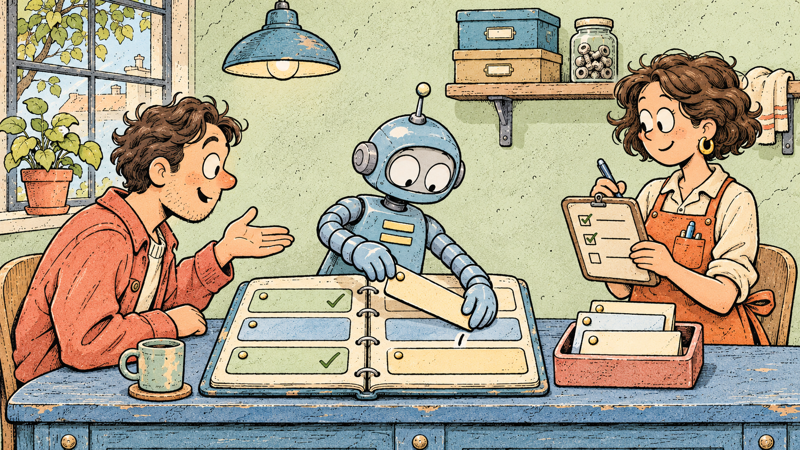
Article
These images are referenced by the actual blog index and homepage. The approved specialists pilot is reused; ten new scenes extend its ink drawing, muted watercolor and business storytelling.

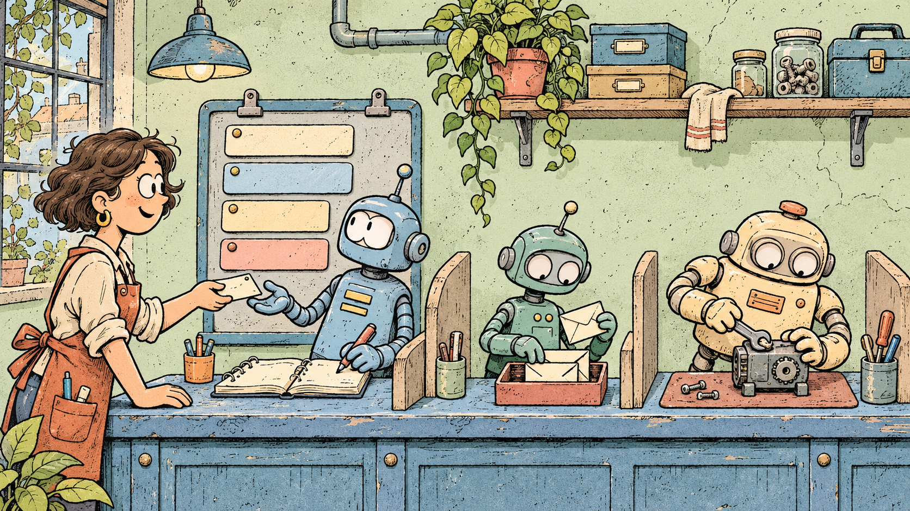
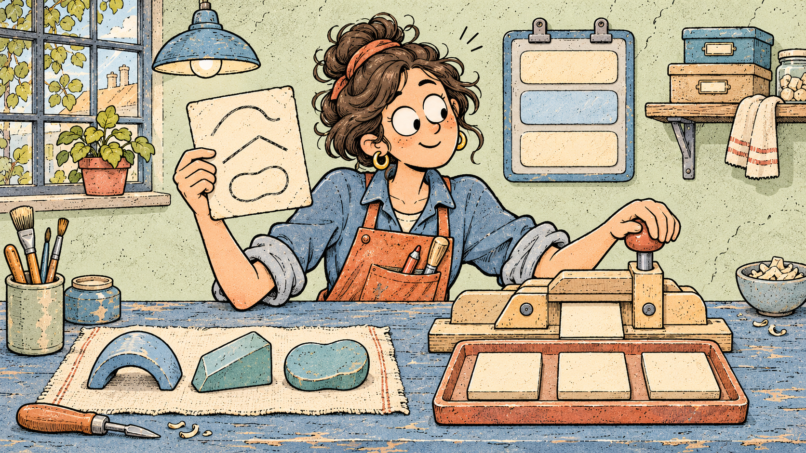
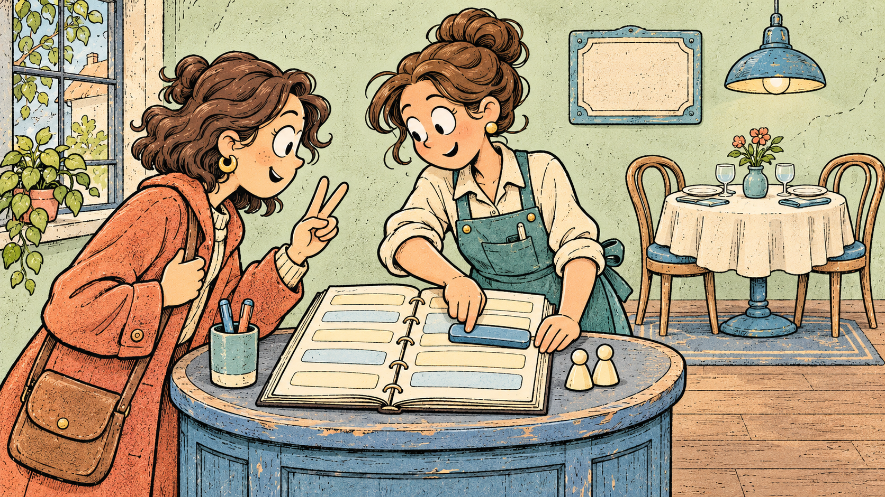
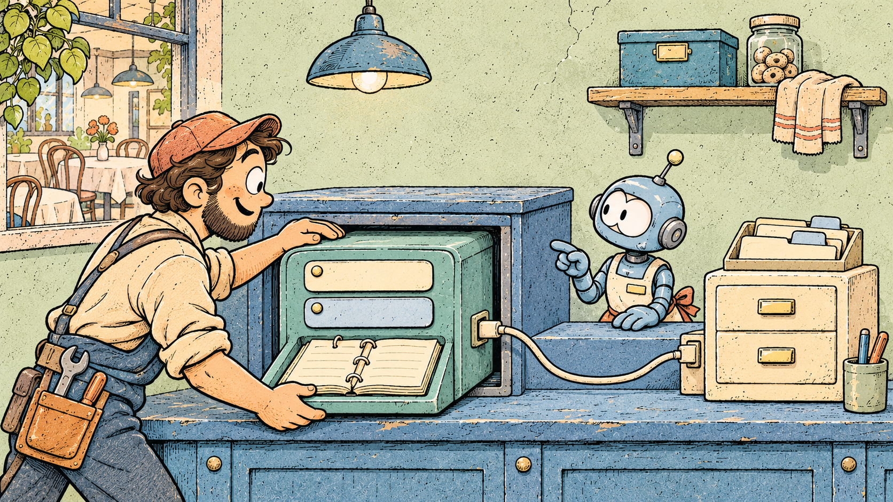
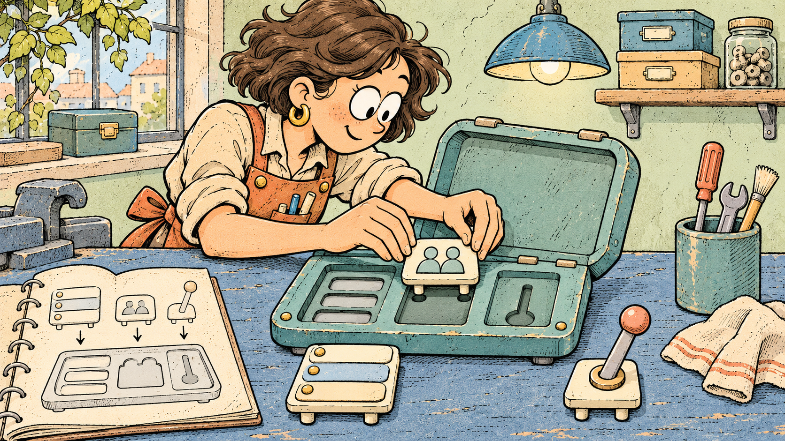
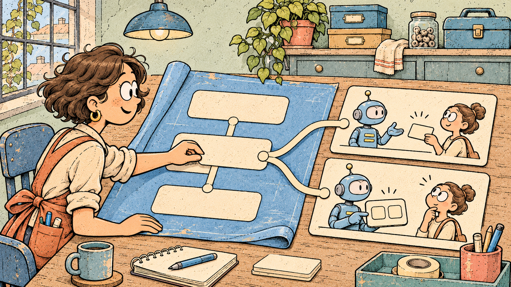
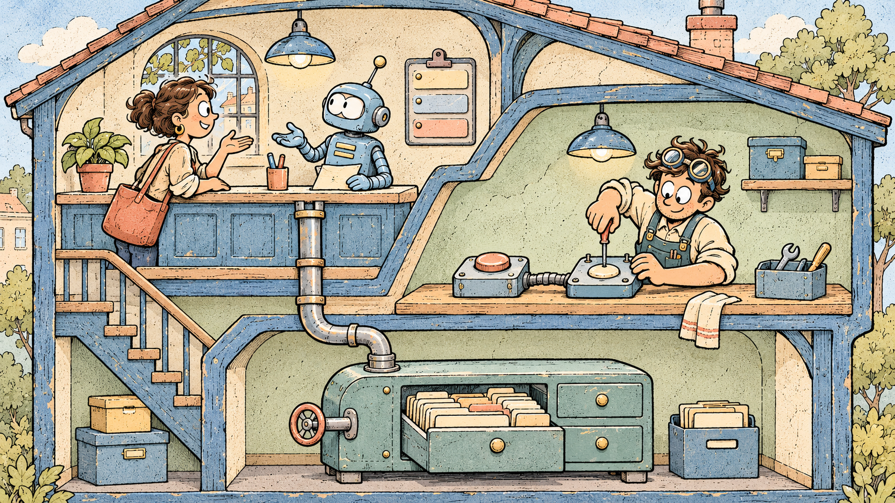
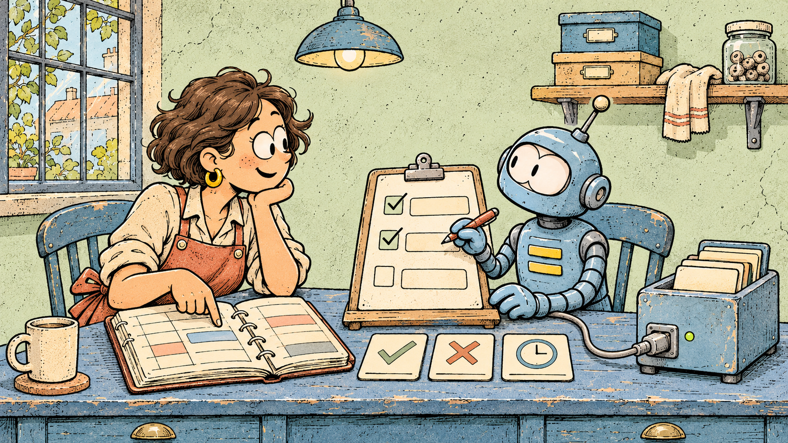
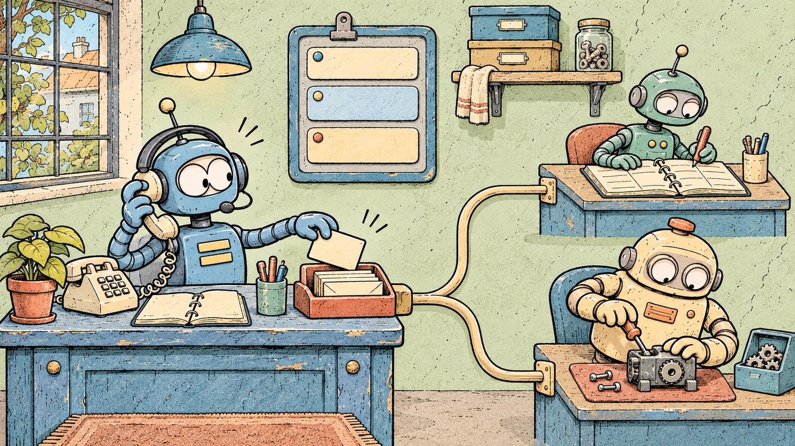
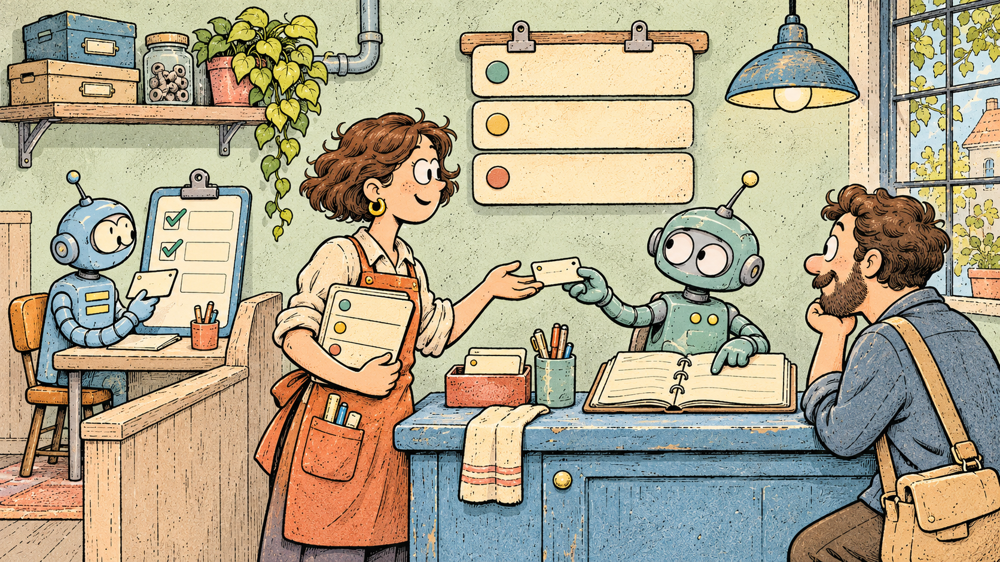